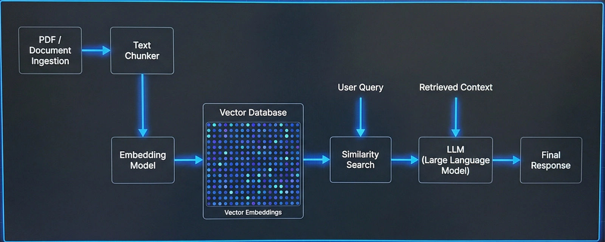
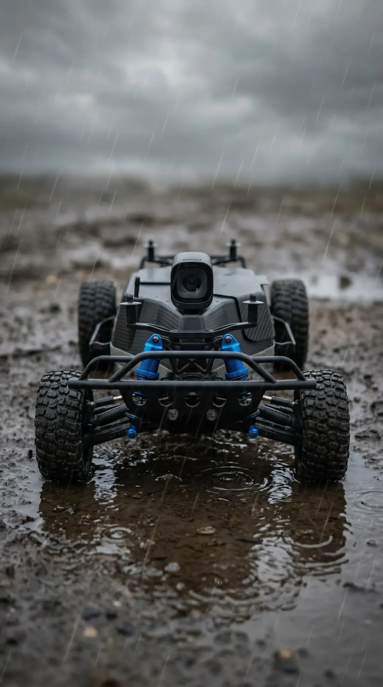
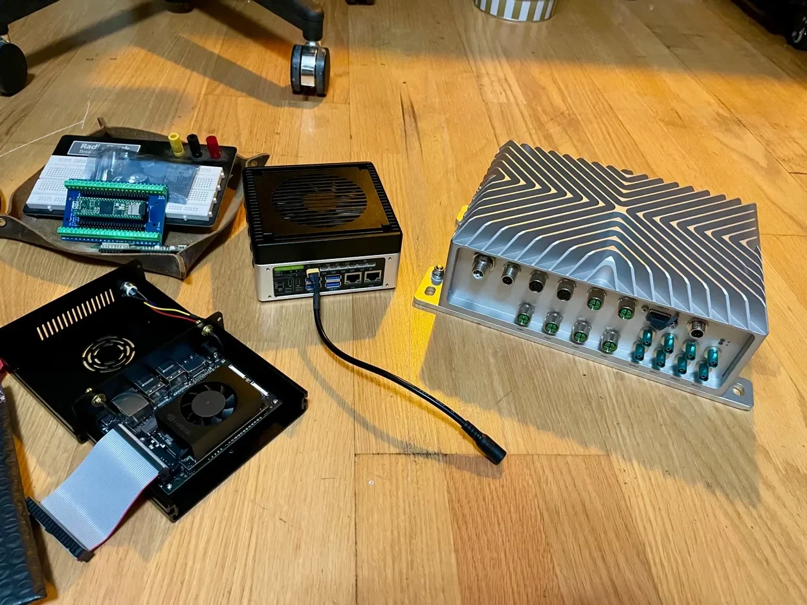
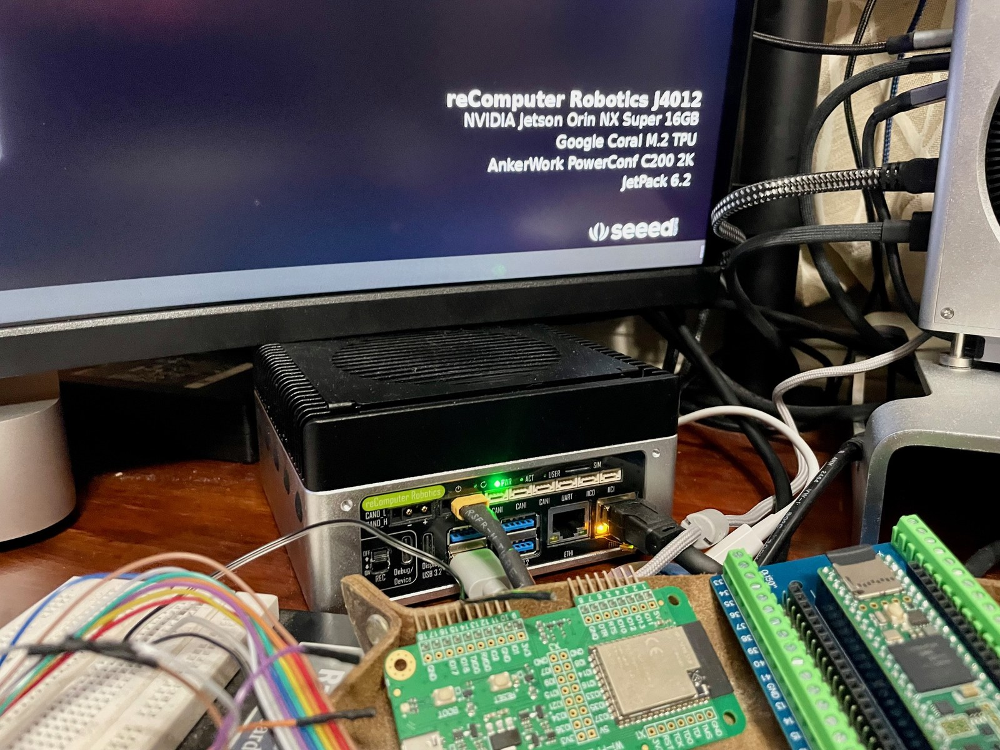
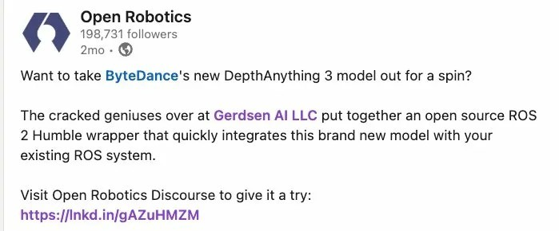
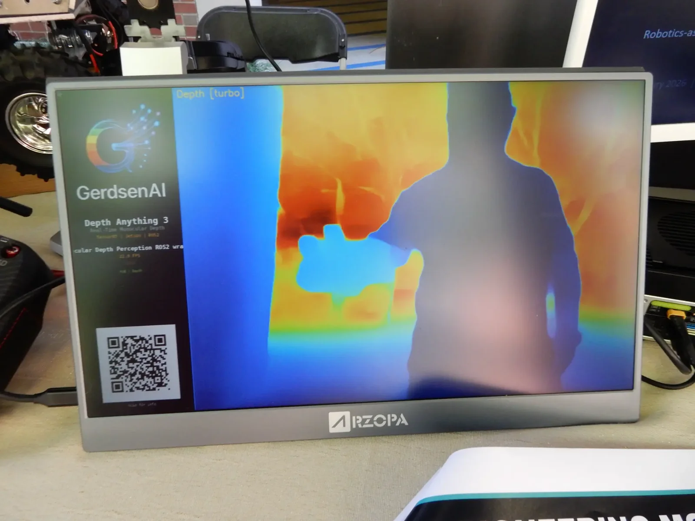

Public proof
Open Robotics highlighted our ROS2 and Depth Anything 3 integration work publicly.
From metal to model
Gerdsen AI turns disconnected workflows into operator-ready software, retrieval, agents, and field deployment.
System view
Desktop apps, retrieval, agents, ROS2, and edge targets designed as a single signal path.
Public proof
Open Robotics highlighted our ROS2 and Depth Anything 3 integration work publicly.
Connection layer
Spreadsheet-to-agent flow, tool routing, MCP servers, and retrieval wired together.
Deployment range
Desktop, on-prem, local runtime, Jetson, robotics, and hybrid delivery paths.
Applications
The company story stays broad because the systems are broad, but the delivery stays concrete: operator software, AI pipelines, grounded knowledge systems, and edge deployment patterns that adapt to the real stack around them.
Operator software
Purpose-built analyst, mission, and internal workflow software that exposes AI to real users instead of trapping value in the backend.
Connection layer
Spreadsheet-to-pipeline conversions, MCP servers, tool routing, approval loops, and agent-assisted operations that remove repetitive work without losing control.
Grounded systems
Vector DB pipelines, document indexing, retrieval orchestration, and private runtime options that keep apps, agents, and operators aligned on the same truth.
Field deployment
ROS2, NVIDIA Jetson, computer vision, Anduril Lattice bridges, and field-ready runtime patterns that connect machines, operators, and software.

Architecture
Pipelines are not just ETL. They connect source data, MCP servers, retrieval, agent execution, human review, and deployment targets across desktop, cloud, local, and edge environments.
Documents, APIs, spreadsheets, sensors, and operator inputs become structured context instead of disconnected data exhaust.
RAG/vector DB, MCP interfaces, task logic, and agent flows decide what should happen automatically and what should stay human-reviewed.
Desktop apps, APIs, Jetson hardware, robotics nodes, and local or hybrid runtimes all feed back into the same system.
Field systems
Real deployment work changes the software decisions. These are the kinds of hardware and field conditions the stack is designed around.

Robotics
ROS2, perception, autonomy support, and operator systems built for dirt, weather, latency, and imperfect environments.

Edge hardware
From compact Jetson deployments to sealed industrial hardware, we build for machines that need reliable inference outside the lab.

Embedded systems
Computer vision and edge AI need the right cameras, buses, boards, and operator hooks around the model to stay useful over time.
Recognition
A concrete proof point: Gerdsen AI built and open-sourced a ROS2 Humble wrapper for ByteDance's Depth Anything 3, and Open Robotics highlighted it publicly as a useful integration for existing ROS systems.
Open source work that earns public signal says more than generic AI copy ever will.
Real ROS2 package work, published publicly.
Practical vision integration, not just a slide-deck mention.
Recognized publicly by Open Robotics.

Services
The strongest fit is a buyer who wants one hands-on partner to connect the stack, remove manual friction, and keep the deployment grounded in real constraints.

Move from concept or demo into a real app, pipeline, agentic flow, or operator-facing system that can actually ship.
Wire APIs, desktop tools, data sources, MCP servers, retrieval, and field systems into one usable operating flow.
Deploy on-device, on-prem, or hybrid when privacy, latency, reliability, or control make a cloud-only answer a bad fit.
Stay close to the work, iterate quickly, and solve the hard integration and deployment problems without management theater.
How we work
Partnerships are preferred, but the operating model stays the same: map the system, build the connection layer, and deploy where the stack actually needs to live.
Map inputs, operator needs, existing software, review checkpoints, and runtime targets before code starts moving.
Ship the apps, agents, retrieval, integrations, and orchestration that make the stack behave like one system.
Desktop, cloud, Jetson, or hybrid delivery with observability, handoff clarity, and operator trust built in.
Contact
When AI has to connect, deploy, and hold up in the real world, call Gerdsen AI. Tell us what needs to connect, who needs to use it, and where the AI needs to run.
Call, text, or email away when the work is moving fast.
Lafayette, Louisiana. Serving clients nationwide.
Desktop, local, cloud, edge, or hybrid systems depending on privacy and deployment needs.
Projects are usually scoped around operator workflow, deployment constraints, and what has to stay private or local.
Start the conversation
You'll get a direct response with next steps, not a generic intake loop.